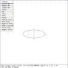
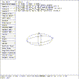

This tutorial illustrates the application of the SOL EDIT state to the ellipsoid primitive.
 Figure (ese-top): Top View of an Ellipsoid
mged> press reset
mged> size 6
mged> in ell ellg
Enter X, Y, Z of vertex: 0 0 0
Enter X, Y, Z of vector A: 1 0 0
Enter X, Y, Z of vector B: 0 .3536 -0.3536
Enter X, Y, Z of vector C: 0 .3536 0.3536
mged>
Figure (ese-top) is the display of the primitive in the viewing state. Since the Z axis is perpendicular to the viewing screen, a view of all sides cannot be seen.
mged> Twist ROTY knob clockwise and restore
mged> Twist ROTX knob counter-clockwise and restore
mged>
These actions generate a view that shows all sides.
 Figure (ese-sed): An Ellipsoid in Solid Edit State
mged> Select the ``Solid Illum'' entry in the button menu
mged> Move the mouse out of the menu area
mged> Click the mouse to enter SOL EDIT state
mged>
The display will be changed from the VIEWING MODE through the SOL PICK to the SOL EDIT state. Figure (ese-sed) is the view that is displayed.
The coordinates of the points A, B, C, are given by the product of the magnitude of the vector and the cosine of X, Y, and Z direction cosines. In the display, the coordinates are:
A = (1, 0, 0) B = (0, 0.3536, -0.3536) C = (0, 0.3536, 0.3536)or
A = ( 1* cos 0, 1* cos 90, 1* cos 90 ) B = (.5* cos 90, .5* cos 45, -.5* cos 45 ) C = (.5* cos 90, .5* cos 45, .5* cos 45 )
{kind=link}
{kind=link}